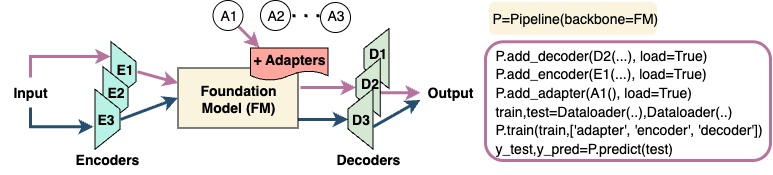
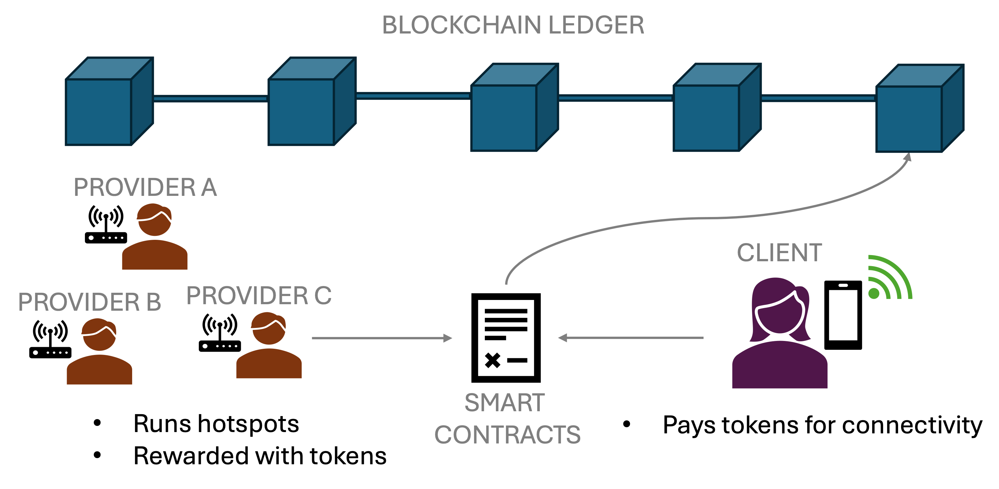
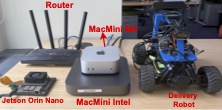
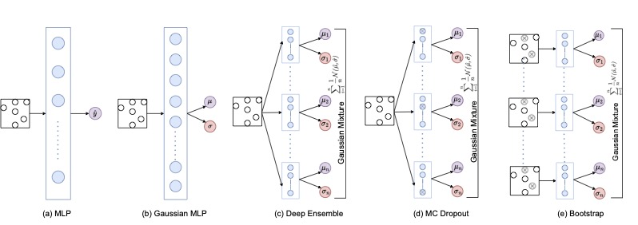
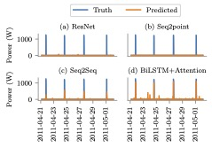
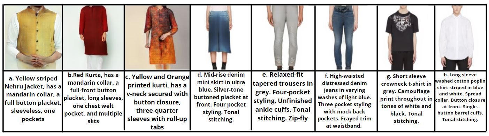

About
Foundation models are powerful, but serving them at scale is all about tradeoffs. I build the systems that get those tradeoffs right.
I'm a Ph.D. student in Computer Science at UMass Amherst, advised by Prof. Prashant Shenoy, and I collaborate with Prof. Mani Srivastava's lab at UCLA. My work balances fairness and efficiency when many tasks share one model, correctness and efficiency in stateful generative media workflows, and modularity and scalability in composable model pipelines.
I've taken these ideas into industry too: as a summer intern at Dolby Labs, I built cross-modal caching for iterative GenAI workflows, and at Nokia Bell Labs, I worked on trust in decentralized wireless networks. Both led to patent applications.
Before UMass, I earned my B.Tech. in Electrical Engineering (minor in CS) at IIT Gandhinagar, working with Prof. Nipun Batra and Prof. Himanshu Shekhar.
FMTK: A Modular Toolkit for Composable Time Series Foundation Model Pipelines
Hetvi Shastri, Pragya Sharma, Walid A. Hanafy, Mani Srivastava, and Prashant Shenoy
NeurIPS 2025, Workshop on Recent Advances in Time Series Foundation Models
LLM-Driven Auto Configuration for Transient IoT Device Collaboration
Hetvi Shastri, Walid A. Hanafy, Li Wu, David Irwin, Mani Srivastava, and Prashant Shenoy
ACM/IEEE SEC 2025
Rethinking Collaboration Among Mobile Devices in IoT Environments
Hetvi Shastri, Walid A. Hanafy, Li Wu, David Irwin, Mani Srivastava, and Prashant Shenoy
ACM SenSys 2025, Poster
Trust or Bust: A Survey of Threats in Decentralized Wireless Networks
Hetvi Shastri, Akanksha Atrey, Andre Beck, and Nirupama Ravi
NDSS Symposium 2025, FutureG Workshop
I Do Not Know: Quantifying Uncertainty in Neural Network Based Approaches for Non-Intrusive Load Monitoring
Hetvi Shastri, Vibhuti Bansal, Rohit Khoiwal, Haikoo Khandor, and Nipun Batra
ACM BuildSys 2022 · Paper
Vastr-GAN: Versatile Apparel Synthesised from Text Using a Robust Generative Adversarial Network
Hetvi Shastri, Dhruvi Lodhavia, Palak Purohit, Ronak Kaoshik, and Nipun Batra
ACM CODS-COMAD 2022 · Paper
Neural Network Approaches and Dataset Parser for NILM Toolkit
Hetvi Shastri and Nipun Batra
ACM BuildSys 2021 · Paper
Stateful Cross-Modal Caching for Iterative GenAI Workflows
Dolby Labs
US Patent Application (in process)
ConnCast: Secure Connectivity Experience Sharing via Localized P2P Networks
Hetvi Shastri, Akanksha Atrey, Andre Beck, and Nirupama Ravi
Nokia Bell Labs · US Patent Application (in process)
News
Jun 2026
Starting Ph.D. Research Internship at Dolby Labs, working on stateful cross-modal caching for iterative GenAI workflows!!
Jun 2026
Reviewer for S3 workshop, MobiCom 2026.
Apr 2026
Artifact Evaluator for OSDI 2026.
Dec 2025
Presenting FMTK at the Recent Advances in Time Series Foundation Models workshop, NeurIPS 2025!!
Dec 2025
Presenting our paper on LLM-driven auto configuration for transient IoT device collaboration at ACM/IEEE SEC 2025, with a student travel grant. Also serving as a student volunteer!
2025
Received the Invention Filing Award from Nokia Bell Labs for the ConnCast patent application.
Aug 2025
Reviewer for S3 workshop, MobiCom 2025.
Aug 2025
Artifact Evaluator for EuroSys 2026.
May 2025
Presenting CollabIoT poster at Sensys 2025!!
April 2025
Working at Prof Mani Srivastava's lab, UCLA for a week!!
March 2025
CollabIoT poster accepted at Sensys 2025!!
Feb 2025
ConnCast patent accepted for filing at Nokia Bell Labs!!
Jan 2025
Paper at Nokia Bell Labs internship accepted at FutureG workshop, NDSS!!
June 2024
Starting internship at Nokia Bell Labs, New Jersey!!
Aug 2023
Awarded travel grant for attending ACM SIGCOMM 2023 at New York.
Jun 2023
Selected for the prestigious GHC Student Scholarship, enabling participation at the virtual Grace Hopper Celebration 2023 (GHC 23).
May 2023
Awarded the distinguished James Kurose Scholarship at UMass Amherst for exceptional achievements in Computer Science.
May 2023
Granted the esteemed David W. Stemple Scholarship at UMass Amherst in recognition of excellence in pursuing Ph.D. research in Systems.
Nov 2022
Presenting our paper on quantifying uncertainty in NILM at ACM BuildSys 2022.
Sep 2022
Paper on quantifying uncertainty in NILM accepted at ACM BuildSys 2022.
Sep 2022
Starting MS+Ph.D. in computer science at LASS lab, UMass Amherst advised by Prof. Prashant Shenoy.
Jan 2022
Presenting our paper on Generative Adversarial Networks for fashion clothing at CODs COMAD 2022.
Jan 2022
Started working as a Teaching Assistant for ML654 course, IITGn.
Nov 2021
Presenting our paper on Neural network models for NILM at ACM Buildsys 2021.
Nov 2021
Awarded Conference Grant by IIT Gandhinagar for presenting at 8th ACM Buildsys 2021.
Oct 2021
Our paper on Generative Adversarial Networks for fashion clothing accepted at CODs COMAD 2022.
Sep 2021
First paper on Neural network models for NILM accepted at ACM Buildsys 2021.
May 2021
Started working on Non-Intrusive Load Monitoring at Sustainability Lab, IITGn advised by Prof Nipun Batra.
May 2020
Started working on ultrasound imaging at MUSE Lab, IITGn advised by Prof Himanshu Shekhar.
Jul 2018
Started Btech in Electrical Engineering at Indian Institue of Technology Gandhinagar.
Research Projects
Virtualizing Foundation Models for Efficient Multi-Task Serving
Existing foundation model serving systems replicate heavyweight backbones per task, wasting GPU memory and losing batching opportunities across the many downstream tasks a single foundation model can serve. We built a serving system with a virtual foundation model (vFM) abstraction and a batch-aware fair-queueing scheduler, letting many customized tasks share one backbone with per-task isolation and cross-task batching. It reduces latency by up to 80% vs. spatial partitioning and 33.3% vs. best-effort co-location, and hosts 6x more tasks at cluster scale across 7 FM backbones (16 variants) and 92 downstream tasks.

FMTK: Modular Toolkit for Time Series Foundation Model Pipelines
Time Series Foundation Model (TSFM) research relies on ad hoc, model-specific pipelines that hinder modularity, reproducibility, and large-scale experimentation. FMTK provides a unified API for plug-and-play TSFM pipelines, generalizable across domains and demonstrated on ECG, PPG, and energy tasks with PyTorch and PEFT.

Attacks in Trustless Decentralized Wireless Networks
Decentralized wireless networks, where individual entities offer subscriptionless connectivity in exchange for monetary reward, lack mechanisms for trust. We developed a taxonomy of attacks and simulated provider-driven attacks with TC/netem and Nginx on a Raspberry Pi testbed, showing up to 394% monetary profit for malicious actors. We proposed ConnCast, a super-peer-based P2P framework for real-time connectivity experience sharing that uses proofs of network connectivity (PoNC) and proofs of experience (PoE) to prevent adversarial provider behavior. (Nokia Bell Labs internship)

LLM-Driven Auto Configuration for Transient IoT Device Collaboration
Transient IoT setups face device heterogeneity, fine-grained access control, and non-expert usability challenges. We built a system that uses an LLM-driven pipeline (Ollama, PydanticAI) to generate fine-grained access control policies from user intent, enforces them with capability-based JWTs, and uses lightweight async proxies with token-bucket rate limiting for hardware-independent enforcement.

Quantifying Uncertainty in Neural Network Based Approaches for Non-Intrusive Load Monitoring (NILM)
False positives and negatives which is crucial for informed decision about energy usage in the realm of energy disaggregation. We refined uncertainty quantification through recalibration methods on 14 diverse deep learning models on the REDD dataset.

Neural network approaches and dataset parser for nilm toolkit
Total energy consumption disaggregation into individual appliances helps households in understanding and curbing energy usage. We used cutting-edge models including Residual Network (ResNet), RNN with attention, and hybrid Regression-Classification networks for precise energy disaggregation on REDD and IDEAL datasets.

Vastr-gan: Versatile apparel synthesised from text using a robust generative adversarial network
Addressed the challenge of harmonizing diverse cultural, geographical, and creative factors in Indian fashion to effectively cater to personalized design demands. Curated an extensive Indian fashion dataset and employed GANs for intricate text-to-image synthesis. Applied ensemble learning with diverse class divisions and enhanced image synthesis via a YOLO-based classifier-integrated architecture.
Experience
Dolby Labs
Ph.D. Research Intern
Jun 2026 – Oct 2026
University of Massachusetts Amherst
Research Assistant, LASS Lab
Sep 2022 – Present
Nokia Bell Labs
Decentralized Systems Intern
Jun 2024 – Aug 2024
IIT Gandhinagar
Undergraduate Researcher
Sep 2018 – Aug 2022
Teaching
- UMass Amherst: Distributed and Operating Systems, Computer Systems, Programming
- IIT Gandhinagar: Machine Learning (Grad)
Awards & Honors
- Student Travel Grant, ACM/IEEE SEC 2025
- Invention Filing Award, Nokia Bell Labs, 2025
- Student Travel Grant, ACM SIGCOMM 2023
- Grace Hopper Celebration Scholarship, GHC 2023
- James Kurose Scholarship, UMass Amherst, 2023
- David W. Stemple Scholarship for Systems Research, UMass Amherst, 2023
- Conference Grant, BuildSys 2021, IIT Gandhinagar
- Dean's List (3 semesters), IIT Gandhinagar
Service
- Artifact Evaluator: OSDI 2026, EuroSys 2026
- Reviewer: ACM S3 Workshop (MobiCom 2026, MobiCom 2025)
- Student Volunteer: ACM/IEEE SEC 2025
- Guest Lecturer: Machine Learning (Grad), UMass Turing Program (high school students)
- Open Source: NILMTK, NILMTK-Contrib